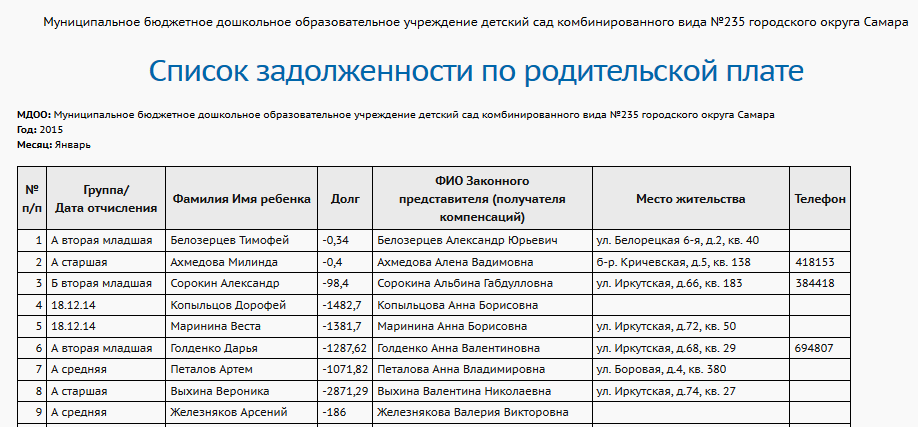

Выводится список только тех воспитанников, которые имеют задолженность по выбранному месяцу. (То есть список тех воспитанников, для которых на экране "Журнал -> Родительская плата" в выбранном месяце в графе Переплата/Долг стоит отрицательное число.)
Данный отчёт позволяет увидеть задолженность в том числе в прошлых периодах (не за последний месяц). В этом случае, если в последующих месяцах родитель погасил задолженность, - то ребёнок не попадёт в отчёт в последующих месяцах.

Группа/Дата отчисления – если в момент формирования отчёта ребёнок зачислен в ДОО, то здесь выводится название группы; если выбыл, то выводится дата выбытия.
Фамилия Имя ребёнка – фамилия и имя воспитанника, по которому есть задолженность.
Долг – сумма задолженности в выбранном месяце.
ФИО законного представителя (получателя компенсаций) – ФИО родителя, который указан в графе «Законный представитель» на экране «Родительская плата»
Место жительства – адрес места жительства из личной карточки ребёнка.
Телефон – поле «Домашний телефон» из личной карточки ребёнка.